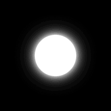

<style>
    * {
        box-sizing: border-box;
        user-select: none;
    }
    body {
        margin: 0px;
        padding: 0px;
        overflow: hidden;
        background: transparent;
        background-color:black;
    }
    .blink {
        animation: blinker 1s linear infinite;
    }
    @keyframes blinker {
        50% {
            opacity: 0;
        }
    }
</style>
<meta name="viewport" content="width=device-width, user-scalable=no, minimum-scale=1.0, maximum-scale=1.0" />
<div style="display: flex; width: 100vw; height: 100vh">
    <div style="position: absolute;" id="three-iframe-cont"></div>
    <div style="display: none;" id="in-canvas-motion-texture"></div>
    <div style="position: absolute; display: flex; left: 0; top: 0; width: 100%; height: 100%; pointer-events: none;" id="indicators"></div>
    <div style="display: flex; justify-content: center; align-items: center; width: 100%; height: 100%; pointer-events: none;" id="wrist-placement"></div>
    <canvas style="position: absolute; pointer-events: none;" id="lineCvs"></canvas>
</div>
<!-- T R A C K I N G -->
<!-- https://cdn.jsdelivr.net/npm/@mediapipe/pose/ -->
<script src="assets/js/tensorflow/tf-core.min.js"></script>
<script src="assets/js/tensorflow/pose/tfjs-converter.js"></script>
<script src="assets/js/tensorflow/pose/tfjs-backend-webgl.js"></script>
<script src="assets/js/tensorflow/pose/pose-detection.js"></script>
<script src="assets/js/tensorflow/pose/pose.js"></script>
<script src="assets/js/tensorflow/hands/hand-pose-detection.js"></script>
<script src="assets/js/tensorflow/hands/hands.js"></script>
<script>
    let createDetector = async (d) => {
        return d.ph ? window.poseDetection.createDetector(window.poseDetection.SupportedModels.BlazePose, { runtime: 'mediapipe', solutionPath: d.solutions }) : window.handPoseDetection.createDetector(window.handPoseDetection.SupportedModels.MediaPipeHands, { runtime: "mediapipe", modelType: "full", maxHands: d.hands, solutionPath: d.solutions });
    },
    createLayers = (d) => {
        d.e = document.createElement("div");
        d.o = window.outerWidth > window.outerHeight;
        d.e.innerHTML =
            `<span style="display:flex;justify-content:center;align-items:center;width:100vw;height:100vh">
                <video id="${d.webcam}" playsinline style="position:absolute;width:100%;height:100%;object-fit:cover;transform:scaleX(${d.mobile ? "1" : "-1"});"></video>
                <span id="show-frame" style="position:absolute; width: ${_hp.sFsize[_hp.touch ? "mobile" : "desktop"]}v${d.o ? "h" : "w"}; height: ${_hp.sFsize[_hp.touch ? "mobile" : "desktop"]}v${d.o ? "h" : "w"}; border-style: dashed; border-color: white; opacity: ${_hp.opacity}"></span>
            </span>`;
        return d.e.firstChild;
    },
    initCamera = async (d) => {
        if (d.wCam.srcObject) d.wCam.srcObject.getVideoTracks()[0].stop();
            d.wCam.srcObject = await navigator.mediaDevices.getUserMedia({ audio: !1, video: { facingMode: d.mobile ? "environment" : "user", frameRate: { max: d.fps } } });
            for (let i = 0, j = ["width", "height"]; i < j.length; i++) d.wCam[j[i]] = d.wCam.srcObject.getVideoTracks()[0].getSettings()[j[i]];
            return new Promise((resolve) => {
                d.wCam.onloadedmetadata = () => {
                    resolve(d.wCam);
                };
            });
    },
    updateLayers = async (d) => {
        d.mobile = /iPhone|iPad|iPod|Android/i.test(navigator.userAgent);
        initCamera({ wCam: d.wCam, mobile: d.mobile, fps: d.fps })
            .then((stream) => {
                if (stream) {
                    stream.play();
                    stream.addEventListener("loadeddata", () => {
                        posesTracking(d);
                    });
                }
            })
            .catch(function (error) {
                // Error!!!
            });
    },
    _getTrackSettings = () => {
        return{
            canvas: "three-iframe-cont",
            webcam: "pose-video",
            width: window.outerWidth,
            height: window.outerHeight,
            fps: 30,
            hands: 1,
            mobile: /iPhone|iPad|iPod|Android/i.test(navigator.userAgent),
            solutions: "./assets/js/tensorflow/hands/solutions/",
        }
    },
    init = (d) => {
        d = _getTrackSettings();
        document.getElementById(d.canvas).appendChild(createLayers({ mobile: d.mobile, webcam: d.webcam, width: d.width, height: d.height }));
        d.wCam = document.querySelector("#" + d.webcam);
        updateLayers(d);
    },
    updateModule = (d) => {
        if (_hp.tracker) {
            d.e = document.getElementById(d.webcam);
            _hp.tracker.horizontal = window.innerWidth > window.innerHeight;
            _hp.tracker.scale = _hp.tracker.horizontal ? (d.e.getBoundingClientRect().width / d.e.width) : (d.e.getBoundingClientRect().height / d.e.height);
            d.e.style.width = _hp.tracker.scale * d.e.width + "px";
            d.e.style.height = _hp.tracker.scale * d.e.height + "px";
            _hp.tracker.offset = {
                width: parseInt(d.e.style.width) - window.innerWidth,
                height: parseInt(d.e.style.height) - window.innerHeight
            };
            _hp.tracker.offset.width = _hp.tracker.offset.width < 0 ? -_hp.tracker.offset.width : _hp.tracker.offset.width;
            _hp.tracker.offset.height = _hp.tracker.offset.height < 0 ? -_hp.tracker.offset.height : _hp.tracker.offset.height;
        };
        wristPlacemet({});
    },
    misAligned = (d) => {
        d.e = document.getElementById("wrist-placement");
        if (d.e) d.e = d.e.getElementsByTagName("span")[0];
        if (d.e) {
            d.e.style.display = "flex";
            d.e = d.e.getElementsByTagName("span")[0];
            if (d.e) d.e.innerHTML = d.reAlign ? `Align wrist within outline.` : d.twisted ? `Wrist top <strong class="blink" style="color: yellow">towards camera</strong>` : `Too ${d.isNear ? "close" : "far"}, please <strong class="blink" style="color: yellow">'Move ${d.isNear ? "Away" : "Closer"}'</strong>`;
            if (d.reAlign) {
                delete _hp.misAligned;
            } else _hp.misAligned = !0;
        };
    },
    wristPlacemet = (d) => {
        d.e = document.getElementById("wrist-placement");
        if (d.e) d.e.innerHTML = `
            <div style="position: absolute; display: flex; justify-content: center; align-items: center; width: calc(100vw - 36px); height: calc(100vh - 42px); pointer-events: none; overflow: hidden">
                 window.outerHeight ? `width: ${_hp.sFscale.mobile.landscape}%` : `height: ${_hp.sFscale.mobile.portrait}%`)}; opacity: .52" src="assets/images/wrist align ${(!_hp.touch ? "desktop" : window.outerWidth > window.outerHeight ? "landscape" : "portrait")} Left.webp"/>
            </div>
            <span style="padding: 12px 12px; position:absolute; top: 10vh; color: white; font-size: 21px; background: #444a; border-radius: 16px; box-shadow: rgba(0, 0, 0, 0.16) 0px 1px 4px;">
                
                <span></span>
            </span>`;
        setShowFrame({});
    },
    setShowFrame = (d) => {
        d.e = document.getElementById("show-frame");
        if (d.e) {
            d.off = _hp.sFoffs[_hp.touch ? "mobile" : "desktop"][window.outerWidth > window.outerHeight ? "landscape" : "portrait"];
            d.e.style.marginLeft = `${_hp.hand.match(/(Left)/) ? "" : "-"}${d.off.x}v${window.outerWidth > window.outerHeight ? "w" : "h"}`;
            d.e.style.marginTop = `${d.off.y}v${window.outerWidth > window.outerHeight ? "w" : "h"}`;
        };
    },
    _setTrackingDots = (d) => {
        if (!_hp.tracker.markers[d.kp.name]) {
            document.getElementById("indicators").innerHTML = `
                <span id="` + d.kp.name + `" style="position: absolute; left: 40px, top: 50px; border-radius: 50%; pointer-events: none;">
                    
                </span>
            ` + document.getElementById("indicators").innerHTML;
            _hp.tracker.markers[d.kp.name] = document.getElementById(d.kp.name);
        } else d.e = _hp.tracker.markers[d.kp.name];
        d.e = document.getElementById(d.kp.name);
        if (d.e) {
            d.e.style.display = "block";
            d.e.style.left = (d.ph ? ((_hp.touch ? 0 : window.innerWidth) + (_hp.touch ? 1 : -1) * (d.kp.x * _hp.tracker.scale - _hp.tracker.offset.width / 2)) : ((!_hp.touch ? 0 : window.innerWidth) + (!_hp.touch ? 1 : -1) * (d.kp.x * _hp.tracker.scale - _hp.tracker.offset.width / 2))) - _hp.mz;
            d.e.style.top = d.kp.y * _hp.tracker.scale - _hp.tracker.offset.height / 2 - _hp.mz;
            d.positions[d.kp.name] = {
                x: parseInt(d.e.style.left) + _hp.mz,
                y: parseInt(d.e.style.top) + _hp.mz
            };
            if (d.kp.name.match(/(wrist)/)) {
                d.off = _hp.sFoffs[_hp.touch ? "mobile" : "desktop"][window.outerWidth > window.outerHeight ? "landscape" : "portrait"];
                d.ofX = (_hp.hand.match(/(Left)/) ? 1 : -1) * window[`inner${_hp.tracker.horizontal ? "Height" : "Width"}`] / (100 / d.off.x);
                d.ofY = window[`inner${_hp.tracker.horizontal ? "Height" : "Width"}`] / (100 / d.off.y);
                d.cFsize = window[`inner${_hp.tracker.horizontal ? "Height" : "Width"}`] / (100 / _hp.sFsize[_hp.touch ? "mobile" : "desktop"]) / 2;
                if (d.positions[d.kp.name].x > window.innerWidth / 2 - d.cFsize + d.ofX && d.positions[d.kp.name].x < window.innerWidth / 2 + d.cFsize + d.ofX && d.positions[d.kp.name].y > window.innerHeight / 2 - d.cFsize + d.ofY && d.positions[d.kp.name].y < window.innerHeight / 2 + d.cFsize + d.ofY) d.allow = !0;
            };
        };
    },
    _hp = {
        mz: 24,
        opacity: 1, // 0 hides dots
        sFscale: { // Show frame offset
            mobile: { landscape: 110, portrait: 110 },
            desktop: 96
        },
        sFsize: { mobile: 42, desktop: 21}, // Show frame size
        sFoffs: { // Show frame offset
            mobile: { landscape: { x: 15, y: -3 }, portrait: { x: 9, y: -14 } },
            desktop: { landscape: { x: 25, y: 14 }, portrait: { x: 25, y: 14 } }
        },
        touch: window.matchMedia("(any-hover: none)").matches,
        cFlip: !1, // Mirror canvas
        hand: "Left",
    };
    window.estimatePoses = async (d) => {
        d.landscape = window.outerWidth > window.outerHeight;
        delete d.allow;
        if (!_hp.tracker) {
            _hp.tracker = { markers: {} };
            updateModule(d);
        };
        if (d.hDetector && d.pDetector) {
            d.positions = {};
            for (const hand of await d.hDetector.estimateHands(d.wCam, { enableSmoothing: !1, flipHorizontal: !0 })) {
                d.hand3D = hand.keypoints3D;
                _hp.hand = hand.handedness;
                for (let i = 0, j = [0, 9, 17]; i < j.length; i++) {
                    keypoint = hand.keypoints[j[i]];
                    if (keypoint.name.match(/(wrist|middle_finger_mcp|pinky_finger_mcp)/))
                        _setTrackingDots(Object.assign(d, { ph: !1, kp: keypoint }));
                };
            };
            for (const pose of await d.pDetector.estimatePoses(d.wCam, { enableSmoothing: !1, flipHorizontal: !1 })) {
                d.pose3D = pose.keypoints3D;
                for (let i = 0, j = [13, 14]; i < j.length; i++) {
                    keypoint = pose.keypoints[j[i]];
                    if (keypoint.name.match(_hp.hand.toLowerCase() + "_elbow"))
                        _setTrackingDots(Object.assign(d, { ph: !0, kp: keypoint }));
                };
            };
        };
        d.e = document.getElementById("wrist-placement");
        d.i = d.e.getElementsByTagName("img")[0];
        if (d.i && _hp.hand)
            if (!d.i.src.includes(_hp.hand)) {
                d.i.src = d.i.src.replace(_hp.hand.match(/(Left)/) ? "Right" : "Left", _hp.hand);
                setShowFrame({});
            }
        if (!d.allow) {
            misAligned({ reAlign: !0 });
            if (d.i) d.i.style.opacity = .52;
            if (d.positions && Object.keys(d.positions).length == 0) {
                for (let key in _hp.tracker.markers) {
                    d.e = document.getElementById(_hp.tracker.markers[key].id);
                    if (d.e) d.e.style.display = "none";
                };
            };
        } else {
            if (d.e && !_hp.misAligned) d.e.getElementsByTagName("span")[0].style.display = "none";
            if (d.i) d.i.style.opacity = _hp.touch ? .07 : .21;
        }
        requestAnimationFrame(() => {
            setTimeout(() => {
                estimatePoses(d);
            }, (_hp.touch ? 4200 : 2400) / d.fps);
        });
    };
    window.posesTracking = async (d) => {
        try {
            if (d.hDetector) d.hDetector.dispose();
            d.hDetector = await createDetector(Object.assign(d, { ph: !1 }));
            if (d.pDetector) d.pDetector.dispose();
            d.pDetector = await createDetector(Object.assign(d, { ph: !0 }));
            estimatePoses(d);
        } catch (error) {}
    };
    init({});
</script>